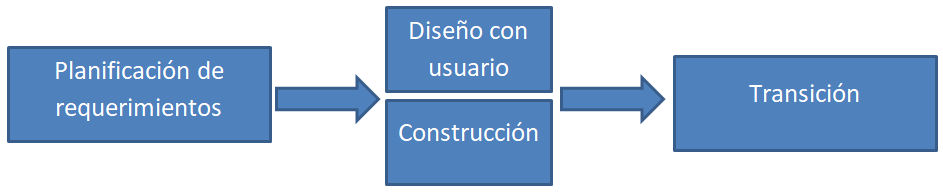

¿Que es la metodologia RAD?
Destaca por su flexibilidad y adaptabilidad a los cambios
el producto es fácil de trasladar a otros entornos además
cada etapa del proyecto prioriza las necesidades de los clientes

Caracteristicas
Entorno de desarrollo visual
Interfaz de arrastrar y soltar
Plantillas y componentes preconstruidos
Compatibilidad multiplataforma
Capacidades de integración
Ventajas
Reducción del tiempo de desarrollo y aceleración de la entrega
Mejora de la flexibilidad y la adaptabilidad
Mejor gestión de riesgos
Desventajas
Comprar puede ser más caro que construir
Costo de herramientas integradas y equipo necesario
Progreso más difícil de medir
Menos eficiente
Menor precisión científica
Riesgo de revertirse a las prácticas sin control de antaño